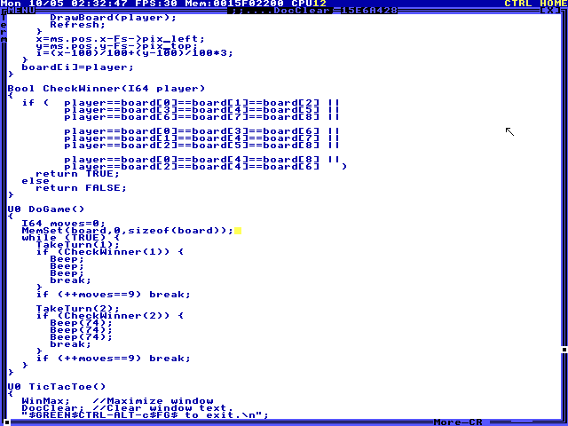

Add a sprite to Tic-Tac-Toe
Task tictactoe_sprite
Grade: needs review Execution: error · Steps: 24 · Elapsed: 158.807 s · Score: —
Review the full source-edit, action, and screenshot trajectory. The saved file must modify the bundled TicTacToe.HC, retaining its game logic. Verify a new native sprite is rendered through TempleOS's sprite API, rather than independent drawing over a board screenshot. Accept either an editor-created asset or a sprite built in HolyC. The sprite must have a 32x32 canvas, a yellow face, two black square eyes, a black horizontal mouth, and transparency outside the face. It must replace player 1's X both in placed marks and the live pointer preview. Compare screenshots at two pointer positions before play to verify preview motion. During play, moving the pointer must leave placed marks fixed at their board cells. Player 2 must still use O. Actual clicks must place a robot in the upper-left square, reject a second click there without advancing the turn, place O in the center, and place another robot in the upper-right square. Check that the occupied click does not overwrite or add a mark and the next accepted move is still player 2's. Game logic must preserve normal turn order, occupied-square rejection, and win detection; inspect the source edit for changes to those rules. Require a visible exit to the shell and relaunch of the saved file, an empty fresh board, and the repeated three valid moves. The final board must show the two robots and center O. The original bundled file must remain intact. Editing global board values, replacing the game with a mockup, or showing art only in an editor does not satisfy the task. Asset creation, source integration, live preview, placement, rejection, and persistence are separately reviewable progress. A final screenshot alone cannot prove source integration or persistence. This task requires trajectory review and has no automatic pass score.
CuaProtocolError: Computer scroll amount must be an integer within -2400..2400 pixels
input tokens: 48551, output tokens: 2713, total tokens: 51264
- Manual review required; no automatic success claim was made.
